library(tidyverse)
library(rmarkdown)R Graphics
Topics
- R
ggplot2package basics - Geometric objects and aesthetics
- Aesthetic inheritance
- Aesthetic mapping versus assignment
- Statistical transformations
- Add and modify scales and legends
- Statify plots using facets
- Manipulate plot labels
- Change and create plot themes
Setup
Software and Materials
Follow the R Installation instructions and ensure that you can successfully start Positron.
Class Structure
Informal - Ask questions at any time. Really!
Collaboration is encouraged - please spend a minute introducing yourself to your neighbors!
Prerequisites
This is an intermediate R course:
- Assumes working knowledge of R
- Relatively fast-paced
Launch an R session
Start Positron and open the workshop materials folder:
- On Mac, Positron will be in your Applications folder. On Windows, click the start button and search for Positron.
- In Positron go to
File -> Open Folderand choose the workshop materials folder on your desktop. Positron makes it the working directory, which is where the data files are, and lists its files in the Explorer on the left. - In the Explorer, click the file with the word “BLANK” in the name to open it.
Packages
You should have already installed the tidyverse and rmarkdown packages onto your computer before the workshop — see R Installation. Now let’s load these packages into the search path of our R session.
The ggplot2 package is contained within tidyverse, but we also want to install two additional packages, scales and ggrepel, which provide additional functionality.
# install.packages("scales")
library(scales)
# install.packages("ggrepel")
library(ggrepel)Goals
We will learn about the grammar of graphics — a system for understanding the building blocks of a graph — using the ggplot2 package. In particular, we’ll learn about:
- Basic plots, aesthetic mapping and inheritance
- Tailoring statistical transformations to particular plots
- Modifying scales to change axes and add labels
- Faceting to create many small plots
- Changing plot themes
Why ggplot2?
ggplot2 is a package within in the tidyverse suite of packages. Advantages of ggplot2 include:
- consistent underlying
grammar of graphics(Wilkinson, 2005) - very flexible — plot specification at a high level of abstraction
- theme system for polishing plot appearance
- many users, active mailing list
That said, there are some things you cannot do with ggplot2:
- 3-dimensional graphics (see
rayshaderor therglpackage) - Graph-theory type graphs (see
ggraphor theigraphpackage) - Interactive graphics (see the
ggvispackage)
ggplot2 ecosystem
The ggplot2 package has spawned a whole ecosystem of packages that extend the functionality of the base package. There are currently 80+ packages that offer many different options, including animated graphs (gganimate), interactive graphs (ggvis), network graphs (ggraph), 3D graphs (rayshader), adding results from statistical tests (ggstatsplot), and additional themes (ggthemes). A gallery of some of the available extensions can be found here: https://exts.ggplot2.tidyverse.org/gallery/.
What is the Grammar Of Graphics?
The basic idea: independently specify plot building blocks and combine them to create just about any kind of graphical display you want. Building blocks of a graph include the following (bold denotes essential elements):
- data
- aesthetic mapping
- geometric object
- statistical transformations
- scales
- coordinate system
- position adjustments
- faceting
- themes
By the end of this workshop, you should understand what these building blocks do and how to use them to create the following plot:
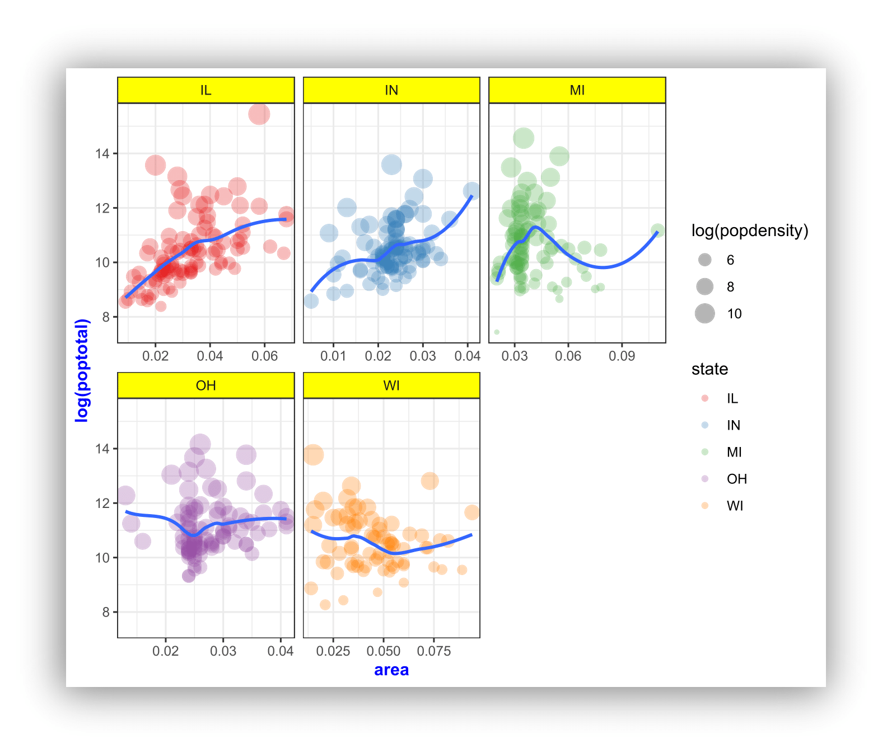
ggplot2 VS base graphics
Compared to base graphics, ggplot2
- is more verbose for simple / canned graphics
- is less verbose for complex / custom graphics
- does not have methods (data should always be in a
data.frame) - has sensible defaults for generating legends
Geometric objects & aesthetics
Aesthetic mapping
In ggplot land aesthetic means “something you can see”. Examples include:
- position (i.e., on the x and y axes)
- color (“outside” color)
- fill (“inside” color)
- shape (of points)
- linetype
- size
Each type of geom accepts only a subset of all aesthetics; refer to the geom help pages to see what mappings each geom accepts. Aesthetic mappings are set with the aes() function.
Geometric objects (geom)
Geometric objects are the actual marks we put on a plot. Examples include:
- points (
geom_point(), for scatter plots, dot plots, etc.) - lines (
geom_line(), for time series, trend lines, etc.) - boxplot (
geom_boxplot(), for boxplots!)
A plot must have at least one geom; there is no upper limit. You can add a geom to a plot using the + operator.
Each geom_ has a particular set of aesthetic mappings associated with it. Some examples are provided below, with required aesthetics in bold and optional aesthetics in plain text:
geom_ |
Usage | Aesthetics |
|---|---|---|
geom_point() |
Scatter plot | x,y,alpha,color,fill,group,shape,size,stroke |
geom_line() |
Line plot | x,y,alpha,color,linetype,size |
geom_bar() |
Bar chart | x,y,alpha,color,fill,group,linetype,size |
geom_boxplot() |
Boxplot | x,lower,upper,middle,ymin,ymax,alpha,color,fill |
geom_density() |
Density plot | x,y,alpha,color,fill,group,linetype,size,weight |
geom_smooth() |
Conditional means | x,y,alpha,color,fill,group,linetype,size,weight |
geom_label() |
Text | x,y,label,alpha,angle,color,family,fontface,size |
You can get a list of all available geometric objects and their associated aesthetics at https://ggplot2.tidyverse.org/reference/. Or, simply type geom_<tab> in any good R IDE (such as Rstudio) to see a list of functions starting with geom_.
Points (scatterplot)
Now that we know about geometric objects and aesthetic mapping, we can make a ggplot. To add points to a plot, geom_point() requires mappings for x and y, all others are optional.
Example data: housing prices
Let’s look at data on housing prices.
housing <- read_csv("dataSets/landdata-states.csv")
head(housing[1:5]) # view first 5 columns# A tibble: 6 × 5
State Region Date Home_Value Structure_Cost
<chr> <chr> <dbl> <dbl> <dbl>
1 AK West 2010. 224952 160599
2 AK West 2010. 225511 160252
3 AK West 2010. 225820 163791
4 AK West 2010 224994 161787
5 AK West 2008 234590 155400
6 AK West 2008. 233714 157458# create a subset for 1st quarter 2001
hp2001Q1 <- housing %>% filter(Date == 2001.25)Step 1: create a blank canvas by specifying data:
ggplot(data = hp2001Q1)Step 2: specify aesthetic mappings (how you want to map variables to visual aspects):
# here we map "Land_Value" and "Structure_Cost" to the x- and y-axes.
ggplot(data = hp2001Q1, mapping = aes(x = Land_Value, y = Structure_Cost))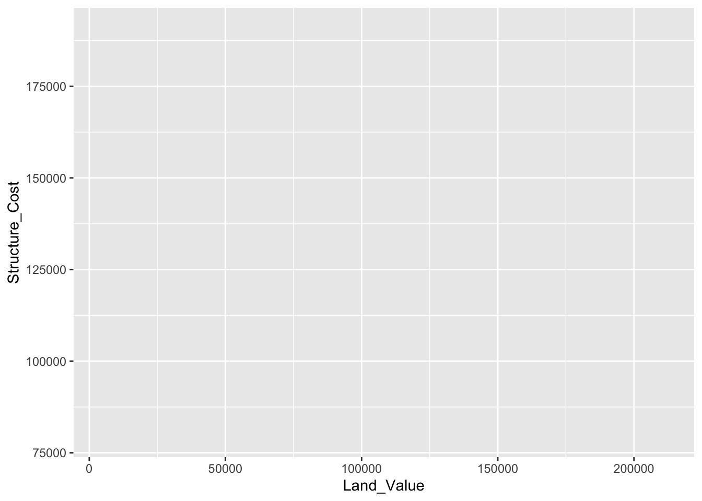
Step 3: add new layers of geometric objects that will show up on the plot:
# here we use geom_point() to add a layer with point (dot) elements
# as the geometric shapes to represent the data.
ggplot(data = hp2001Q1, mapping = aes(x = Land_Value, y = Structure_Cost)) +
geom_point()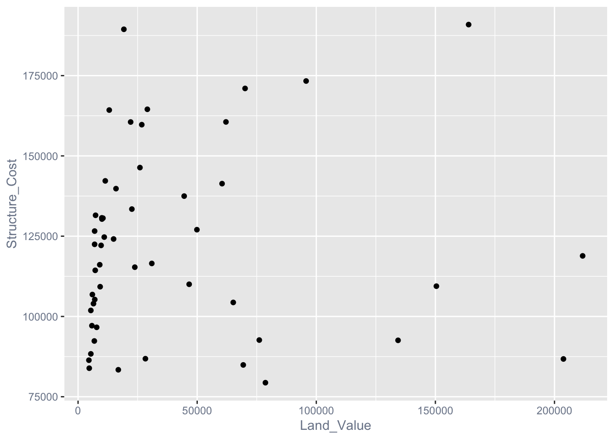
Lines (prediction line)
A plot constructed with ggplot() can have more than one geom. In that case the mappings established in the ggplot() call are plot defaults that can be added to or overridden — this is referred to as aesthetic inheritance. Our plot could use a regression line:
# get predicted values from a linear regression
hp2001Q1$pred_SC <- lm(Structure_Cost ~ log(Land_Value), data = hp2001Q1) %>%
predict()
# here we store the 'base plot' - without geometric objects - in the object 'p1'
p1 <- ggplot(hp2001Q1, aes(x = log(Land_Value), y = Structure_Cost))
# we can then add geometric objects to our base plot 'p1'
p1 + geom_point(aes(color = Home_Value)) + # values for x and y are inherited from the ggplot() call above
geom_line(aes(y = pred_SC)) # add predicted values to the plot overriding the y values from the ggplot() call above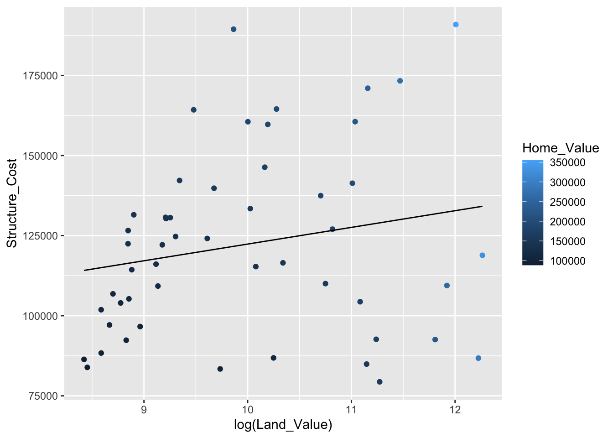
Smoothers
Not all geometric objects are simple shapes; the smooth geom includes a line and a ribbon.
# add smooth geom to base plot
p1 +
geom_point(aes(color = Home_Value)) +
geom_smooth()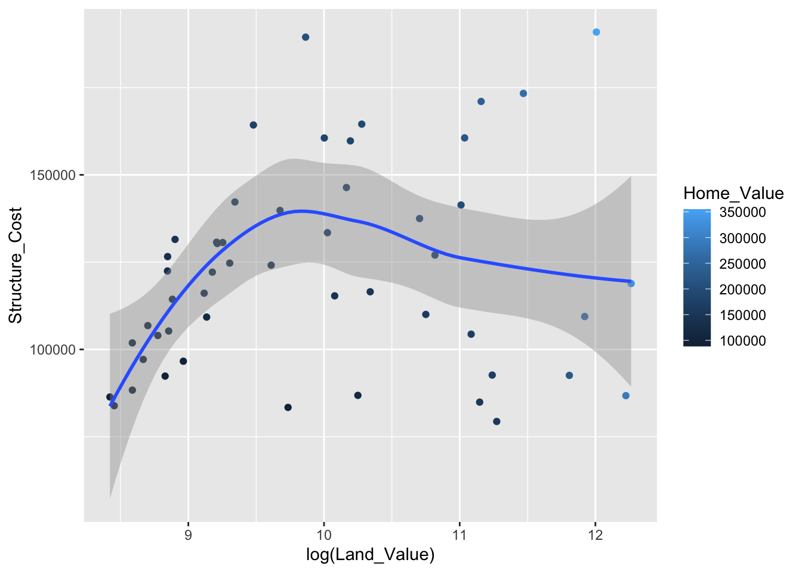
Text (label points)
Each geom accepts a particular set of mappings; for example geom_text() accepts a label mapping.
# add text geom to base plot
p1 +
geom_text(aes(label = State), size = 3)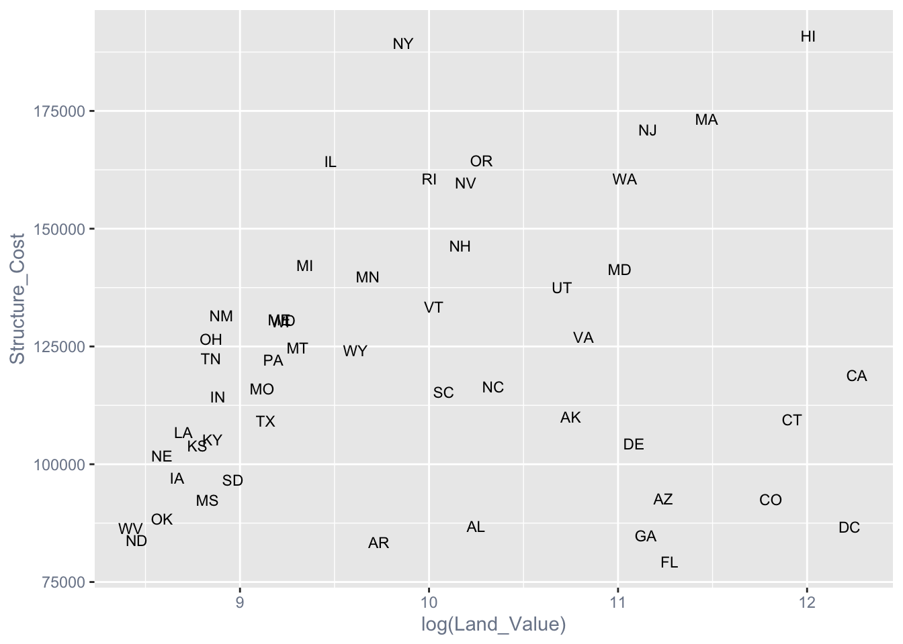
But what if we want to include points and labels? We can use geom_text_repel() to keep labels from overlapping the points and each other.
# add points and text geoms to base plot
p1 +
geom_point() +
geom_text_repel(aes(label = State), size = 3)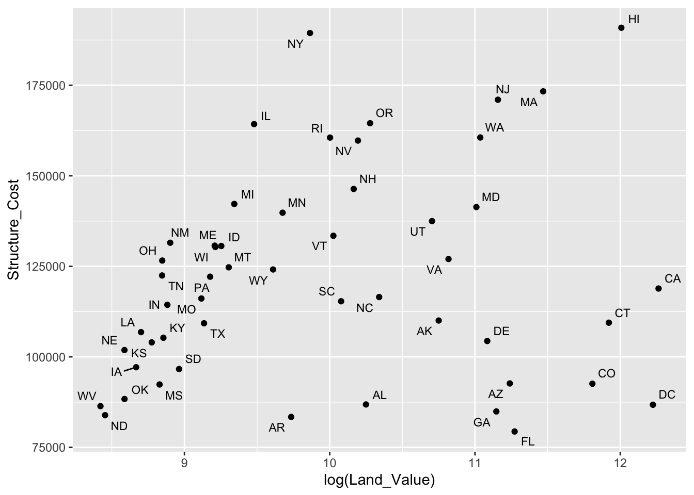
Aesthetic mapping VS assignment
- Variables are mapped to aesthetics inside the
aes()function:
# map `Home_Value` to point size
p1 +
geom_point(aes(size = Home_Value))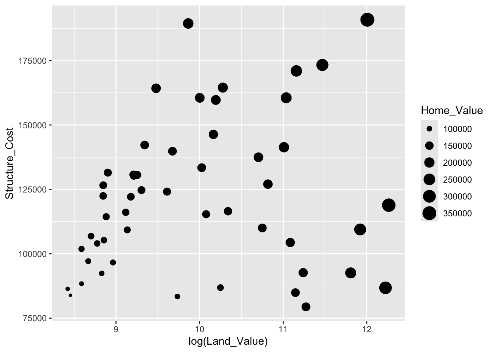
- Constants are assigned to aesthetics outside the
aes()call:
# assign all points a size of 2
p1 +
geom_point(size = 2)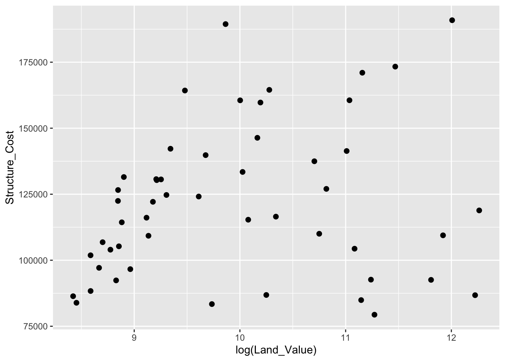
This sometimes leads to confusion, as in this example:
p1 +
geom_point(aes(size = 2),# incorrect! 2 is not a variable
color = "red") # this is fine -- all points red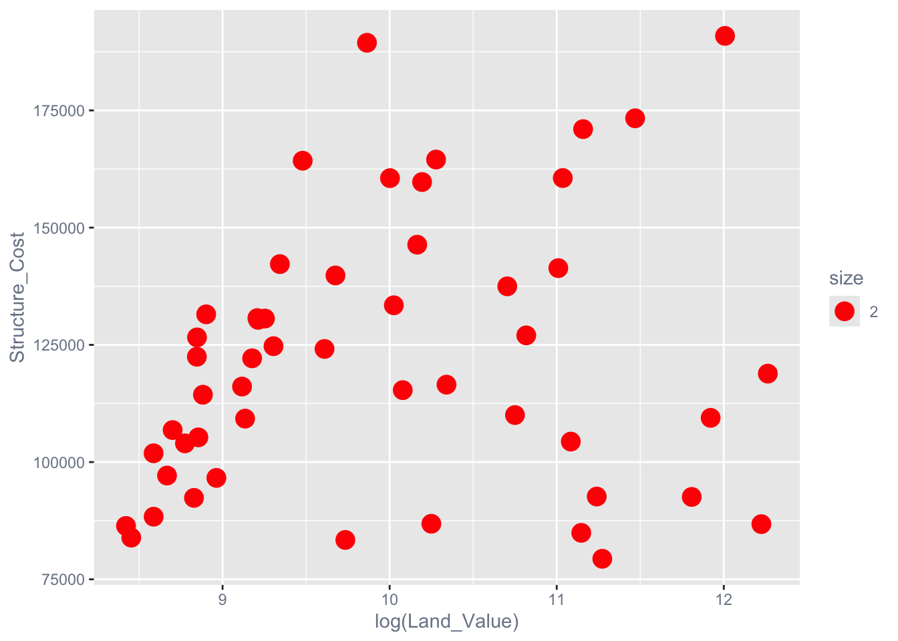
Mapping variables to other aesthetics
Other aesthetics are mapped in the same way as x and y in the previous example.
# map `Home_Value` to color and `Region` to shape
p1 +
geom_point(aes(color = Home_Value, shape = Region))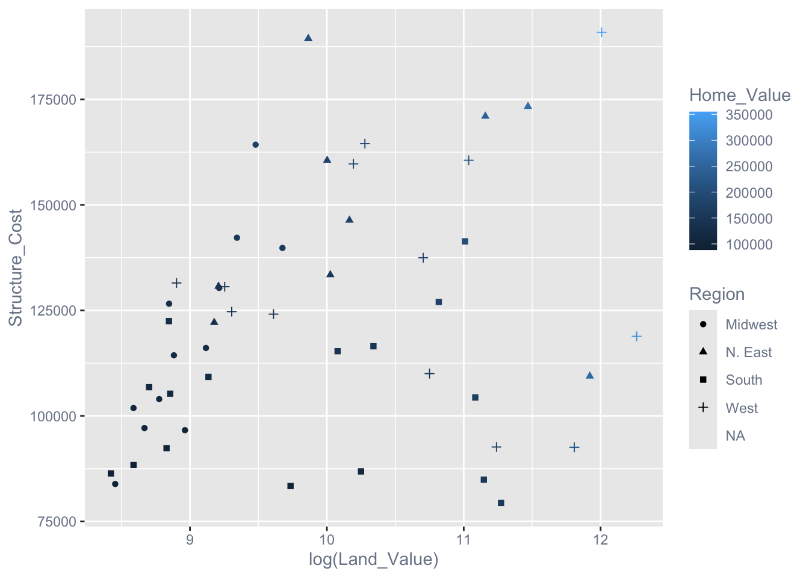
Exercise 0
The data for the next few exercises is available in the dataSets/EconomistData.csv file. Read it in with:
dat <- read_csv("dataSets/EconomistData.csv")Original sources for these data are http://www.transparency.org/content/download/64476/1031428 and https://hdr.undp.org/data-center
These data consist of Human Development Index and Corruption Perception Index scores for several countries.
- Create a scatter plot with
CPIon the x axis andHDIon the y axis.
## - Color the points in the previous plot blue.
## - Map the color of the the points to
Region.
## - Keeping color mapped to
Region, make the points bigger by setting size to 2
## - Keeping color mapped to
Region, map the size of the points toHDI_Rank
##
TipExercise 0 solution
- Create a scatter plot with
CPIon the x axis andHDIon the y axis.
ggplot(dat, aes(x = CPI, y = HDI)) +
geom_point()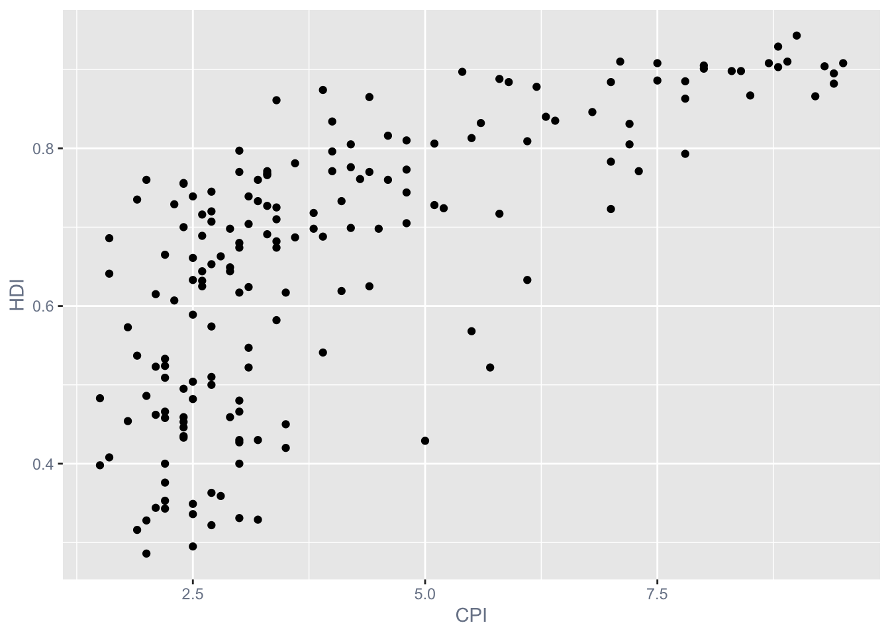
- Color the points in the previous plot blue.
ggplot(dat, aes(x = CPI, y = HDI)) +
geom_point(color = "blue")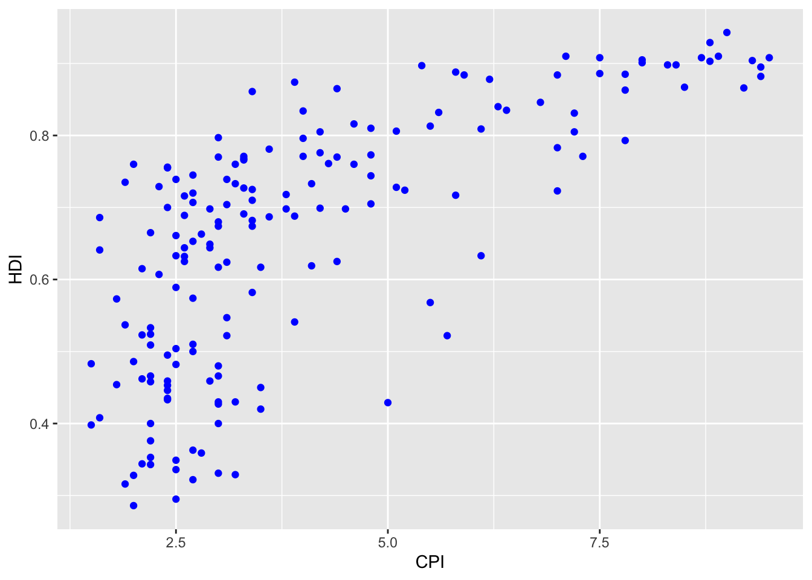
- Map the color of the the points to
Region.
ggplot(dat, aes(x = CPI, y = HDI)) +
geom_point(aes(color = Region))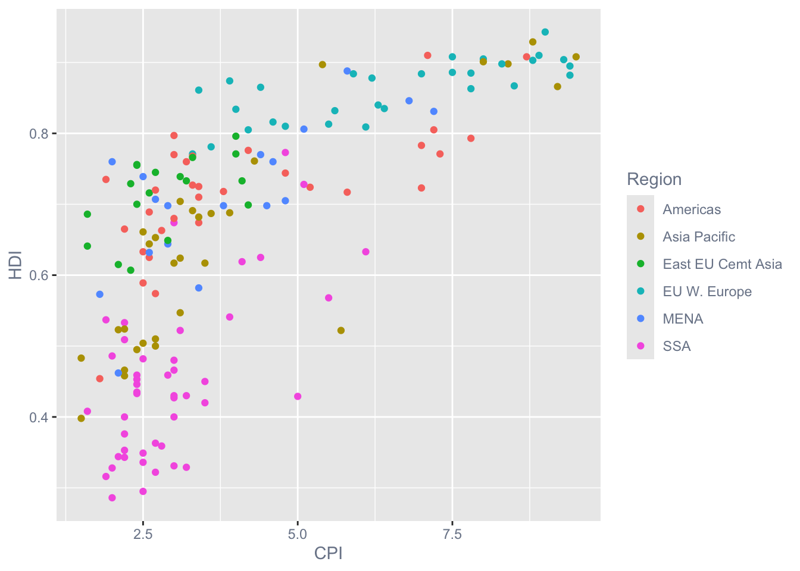
- Keeping color mapped to
Region, make the points bigger by setting size to 2.
ggplot(dat, aes(x = CPI, y = HDI)) +
geom_point(aes(color = Region), size = 2)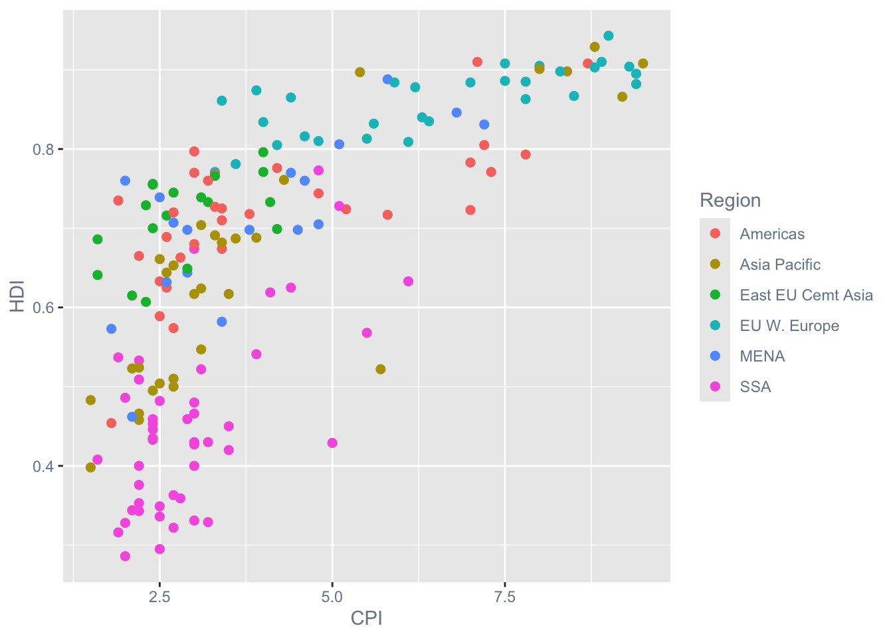
- Keeping color mapped to
Region, map the size of the points toHDI_Rank.
ggplot(dat, aes(x = CPI, y = HDI)) +
geom_point(aes(color = Region, size = HDI_Rank))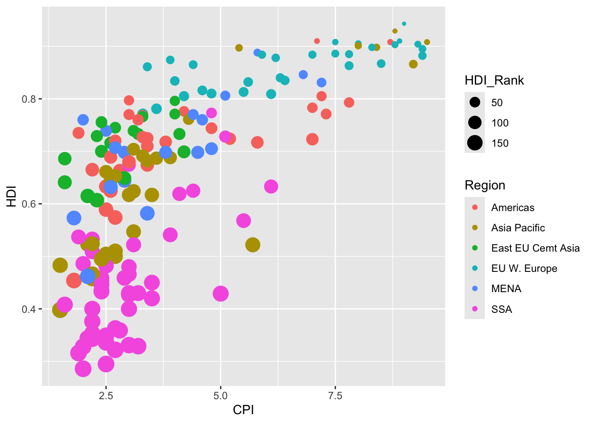
Statistical transformations
Why transform data?
Some plot types (such as scatterplots) do not require transformations; each point is plotted at x and y coordinates equal to the original value. Other plots, such as boxplots, histograms, prediction lines etc. require statistical transformations:
- For a boxplot, the y values must be transformed to the median, quartiles, and 1.5 times the interquartile range.
- For a smoother, the y values must be transformed into predicted mean values
Setting arguments
Each geom_ function has a default statistic that it is paired with and, likewise, each stat_ function has a default geometic object that it is paired with. For example, the default statistic for geom_histogram() is “bin” (called by the stat_bin() function), while the default geometric object for stat_bin() is “bar” (called by the geom_bar() function). These defaults can be changed.
Arguments to stat_ functions can be passed through geom_ functions and vice versa. This can be slightly annoying, because if you are using a geom_ function, in order to specify some arguments you may have to first determine which statistic the geometric object uses, then determine the arguments to that stat_ function.
Let’s look at the arguments for the histogram geometric object (geom_histogram()):
args(geom_histogram)function (mapping = NULL, data = NULL, stat = "bin", position = "stack",
..., binwidth = NULL, bins = NULL, orientation = NA, lineend = "butt",
linejoin = "mitre", na.rm = FALSE, show.legend = NA, inherit.aes = TRUE)
NULLNotice that the third argument is stat = "bin", which calls the stat_bin() function. This is how the histogram geom is, by default, paired with the bin statistic. The fifth argument is ..., which allows us to pass certain arguments to stat_bin() through our call to geom_histogram(). Now let’s look at the arguments available through stat_bin():
args(stat_bin)function (mapping = NULL, data = NULL, geom = "bar", position = "stack",
..., orientation = NA, binwidth = NULL, bins = NULL, center = NULL,
boundary = NULL, closed = c("right", "left"), pad = FALSE,
breaks = NULL, drop = "none", na.rm = FALSE, show.legend = NA,
inherit.aes = TRUE)
NULLThe tenth argument is breaks, which allows us to supply a numeric vector of bin boundaries. Notice that this argument is not available in geom_histogram(), but we can still supply the argument and it will be passed to stat_bin() through the ... argument.
For example, here is the default histogram of Home_Value:
# histogram of `Home_Value`
p2 <- ggplot(housing, aes(x = Home_Value))
p2 + geom_histogram()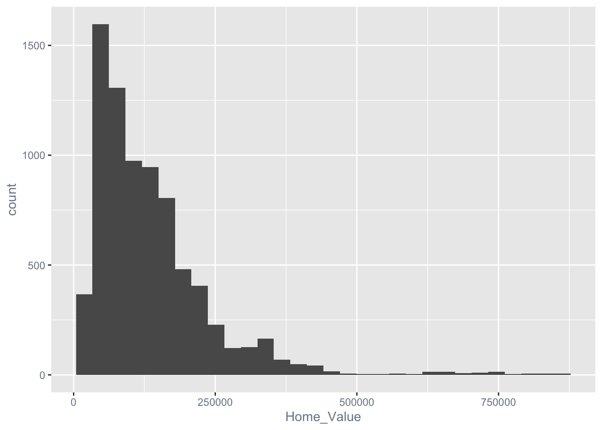
We can change the boundaries for the bins by passing the breaks argument through geom_histogram() to the stat_bin() function:
# change bin boundaries for histogram
p2 + geom_histogram(breaks = seq(0, 875000, by = 250))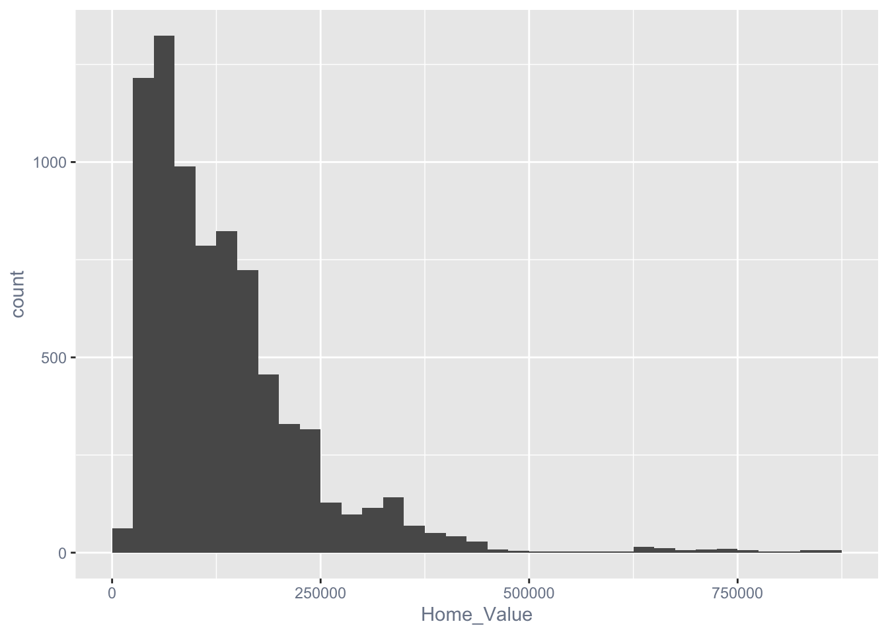
For reference, here is a list of geometric objects and their default statistics https://ggplot2.tidyverse.org/reference/.
Changing the transformation
Sometimes the default statistical transformation is not what you need. This is often the case with pre-summarized data. Let’s create a new variable Home_Value_Mean that is the mean of Home_Value for each State:
# create new variable that is the mean of 'Home Value' for each 'State'
housing_sum <-
housing %>%
group_by(State) %>%
summarize(Home_Value_Mean = mean(Home_Value)) %>%
ungroup()
head(housing_sum)# A tibble: 6 × 2
State Home_Value_Mean
<chr> <dbl>
1 AK 147385.
2 AL 92545.
3 AR 82077.
4 AZ 140756.
5 CA 282808.
6 CO 158176.Now let’s try to create a bar chart using this pre-summarized data:
# barchart using pre-summarized data
ggplot(housing_sum, aes(x = State, y = Home_Value_Mean)) +
geom_bar()
## Error: stat_count() must not be used with a y aesthetic. What is the problem with the previous plot? Basically, we take binned and summarized data and ask ggplot() to bin and summarize it again (geom_bar() defaults to stat = stat_count). Obviously this will not work. We can fix it by telling geom_bar() to use a different statistical transformation function. The identity function returns the same output as the input.
# change the statistical transformation function
ggplot(housing_sum, aes(x = State, y = Home_Value_Mean)) +
geom_bar(stat = "identity")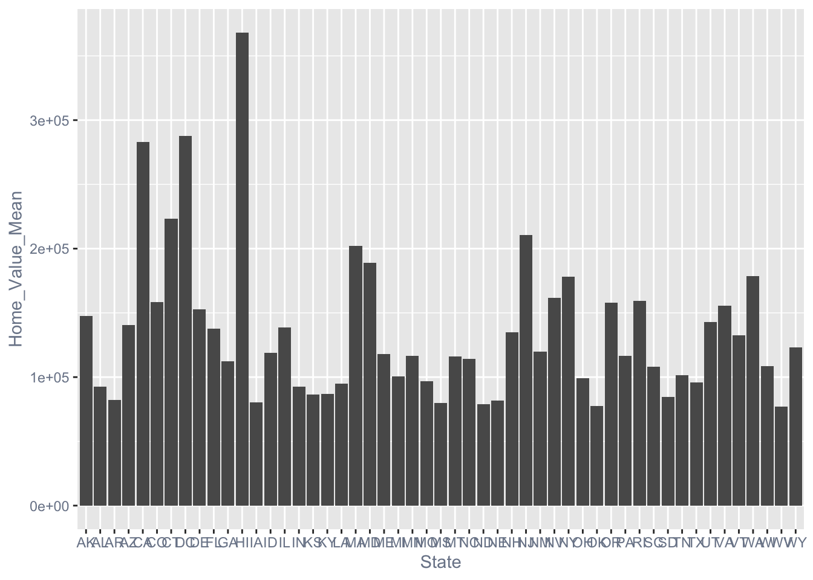
Exercise 1
- Re-create a scatter plot with
CPIon the x axis andHDIon the y axis (as you did in the previous exercise).
## - Overlay a smoothing line on top of the scatter plot using
geom_smooth().
## - Make the smoothing line in
geom_smooth()less smooth. Hint: see?loess.
## - Change the smoothing line in
geom_smooth()to use a linear model for the predictions. Hint: see?stat_smooth.
## - BONUS 1: Allow the smoothing line created in the last plot to vary across the levels of
Region. Hint: mapRegionto the color and fill aesthetics.
## - BONUS 2: Overlay a loess
(method = "loess")smoothing line on top of the scatter plot usinggeom_line(). Hint: change the statistical transformation.
##
TipExercise 1 solution
- Re-create a scatter plot with
CPIon the x axis andHDIon the y axis (as you did in the previous exercise).
ggplot(dat, aes(x = CPI, y = HDI)) +
geom_point()
- Overlay a smoothing line on top of the scatter plot using
geom_smooth().
ggplot(dat, aes(x = CPI, y = HDI)) +
geom_point() +
geom_smooth()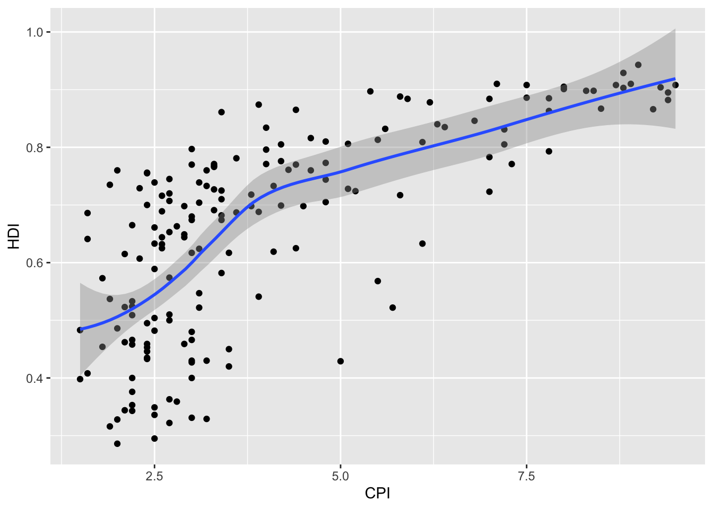
- Make the smoothing line in
geom_smooth()less smooth. Hint: see?loess.
ggplot(dat, aes(x = CPI, y = HDI)) +
geom_point() +
geom_smooth(span = .4)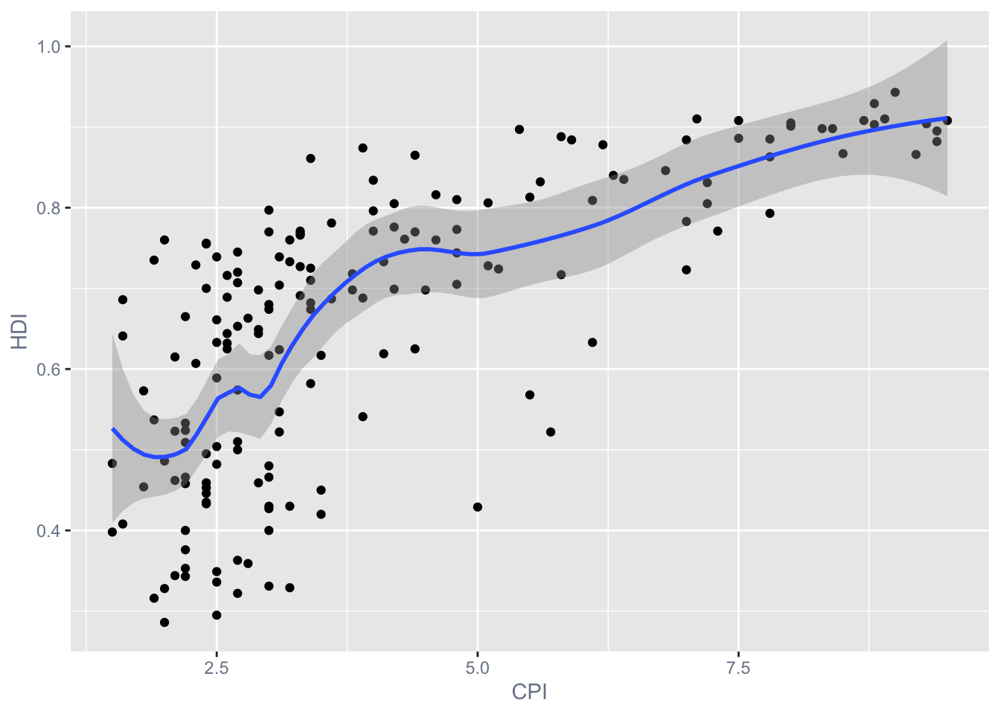
- Change the smoothing line in
geom_smooth()to use a linear model for the predictions. Hint: see?stat_smooth.
ggplot(dat, aes(x = CPI, y = HDI)) +
geom_point() +
geom_smooth(method = "lm")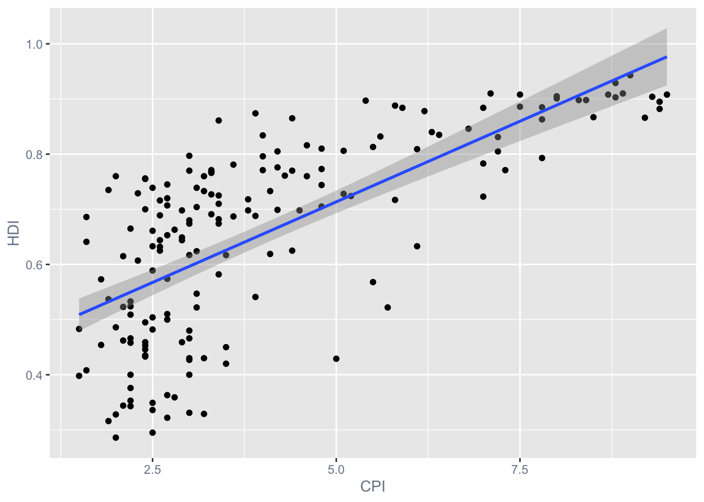
- BONUS 1: Allow the smoothing line created in the last plot to vary across the levels of
Region. Hint: mapRegionto the color and fill aesthetics.
ggplot(dat, aes(x = CPI, y = HDI, color = Region, fill = Region)) +
geom_point() +
geom_smooth(method = "lm")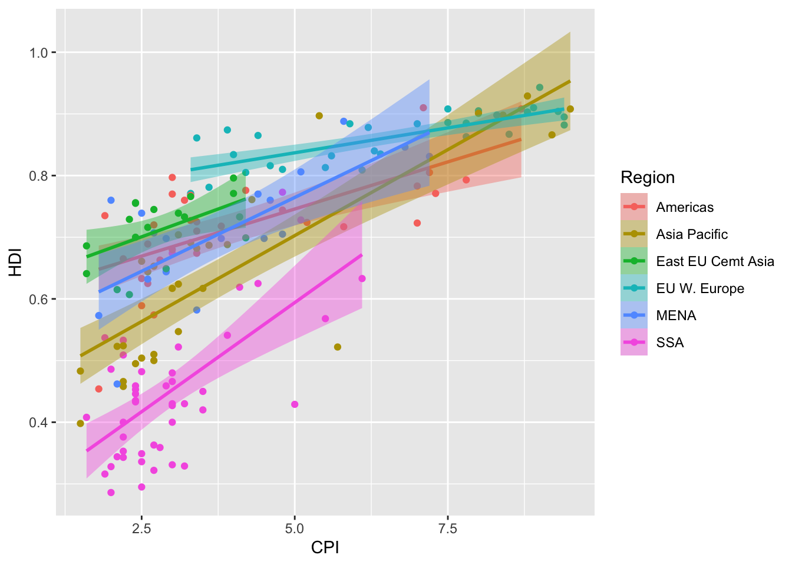
- BONUS 2: Overlay a loess
(method = "loess")smoothing line on top of the scatter plot usinggeom_line(). Hint: change the statistical transformation.
ggplot(dat, aes(x = CPI, y = HDI)) +
geom_point() +
geom_line(stat = "smooth", method = "loess")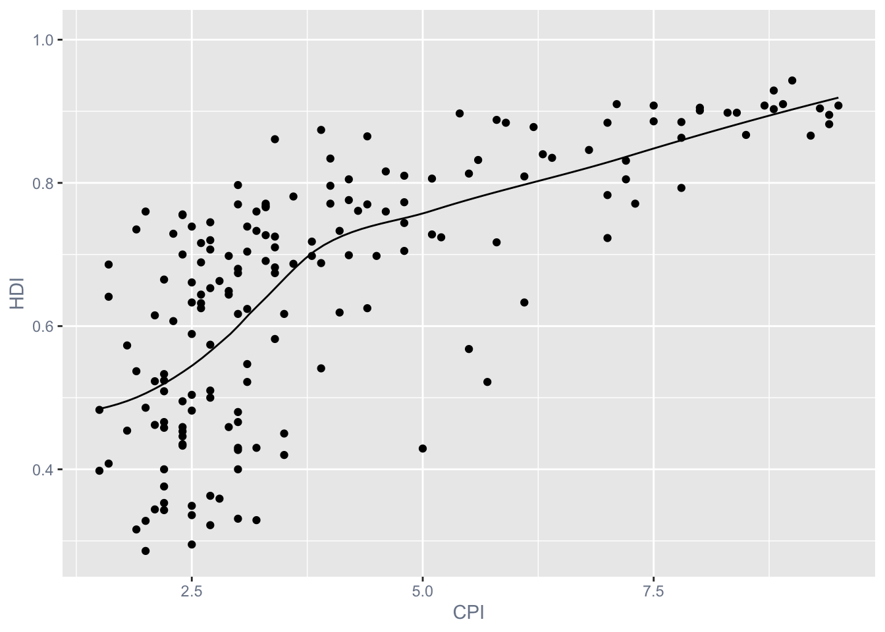
Scales
Controlling aesthetic mapping
Aesthetic mapping (i.e., with aes()) only says that a variable should be mapped to an aesthetic. It doesn’t say how that should happen. For example, when mapping a variable to shape with aes(shape = x) you don’t say what shapes should be used. Similarly, aes(color = y) doesn’t say what colors should be used. Also, aes(size = z) doesn’t say what sizes should be used. Describing what colors/shapes/sizes etc. to use is done by modifying the corresponding scale. In ggplot2 scales include:
- position
- color and fill
- size
- shape
- line type
Scales are modified with a series of functions using a scale_<aesthetic>_<type> naming scheme. Try typing scale_<tab> to see a list of scale modification functions.
Common scale arguments
The following arguments are common to most scales in ggplot2:
- name: the axis or legend title
- limits: the minimum and maximum of the scale
- breaks: the points along the scale where labels should appear
- labels: the labels that appear at each break
Specific scale functions may have additional arguments; for example, the scale_color_continuous() function has arguments low and high for setting the colors at the low and high end of the scale.
Scale modification examples
Start by constructing a dotplot showing the distribution of home values by Date and State.
# base dotplot
p3 <- ggplot(housing, aes(x = State, y = Home_Price_Index)) +
geom_point(aes(color = Date), alpha = 0.5, size = 1.5,
position = position_jitter(width = 0.25, height = 0))Now modify the breaks and shorten the labels for the color scales:
# modify color scale breaks and labels
p3 +
scale_color_continuous(name="",
breaks = c(1976, 1994, 2013),
labels = c("'76", "'94", "'13"))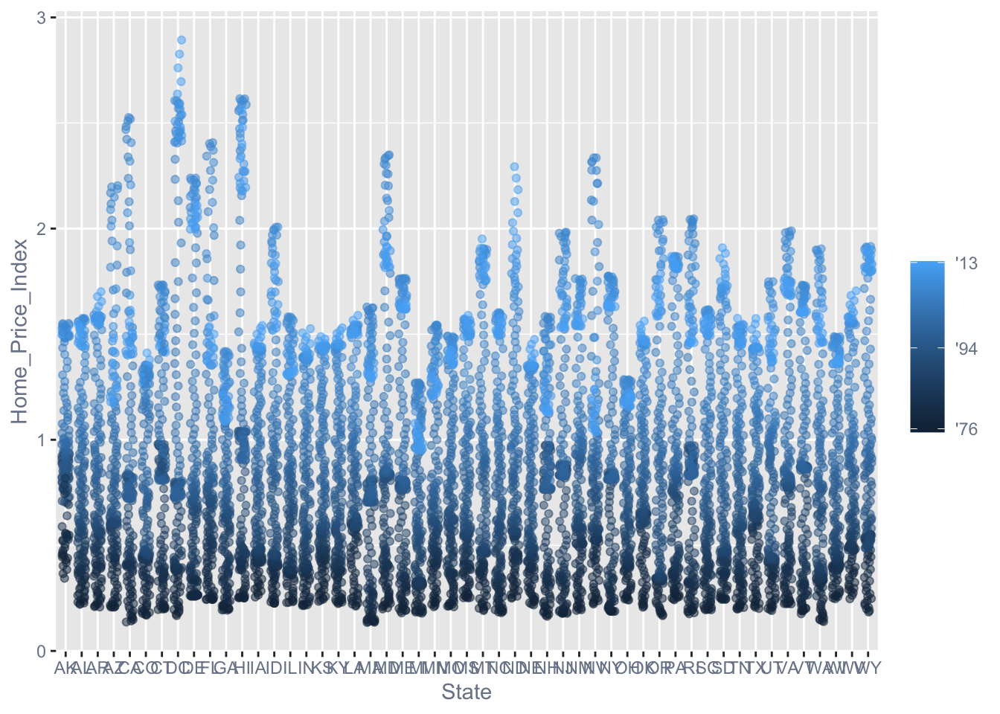
Next change the low and high values to blue and red:
# modify color scale low and high values
p3 +
scale_color_continuous(name="",
breaks = c(1976, 1994, 2013),
labels = c("'76", "'94", "'13"),
low = "blue", high = "red")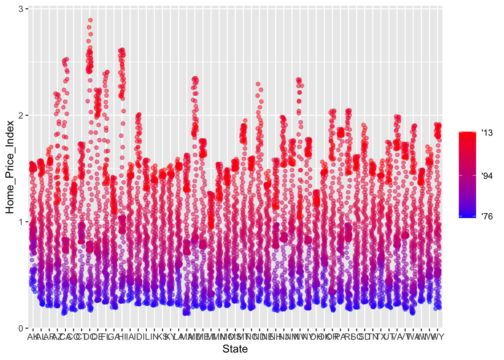
Using different color scales
ggplot2 has a wide variety of color scales; here is an example using scale_color_gradient2() to interpolate between three different colors.
# modify color scale to interpolate between three different colors
p3 +
scale_color_gradient2(name="",
breaks = c(1976, 1994, 2013),
labels = c("'76", "'94", "'13"),
low = "blue",
high = "red",
mid = "gray60",
midpoint = 1994)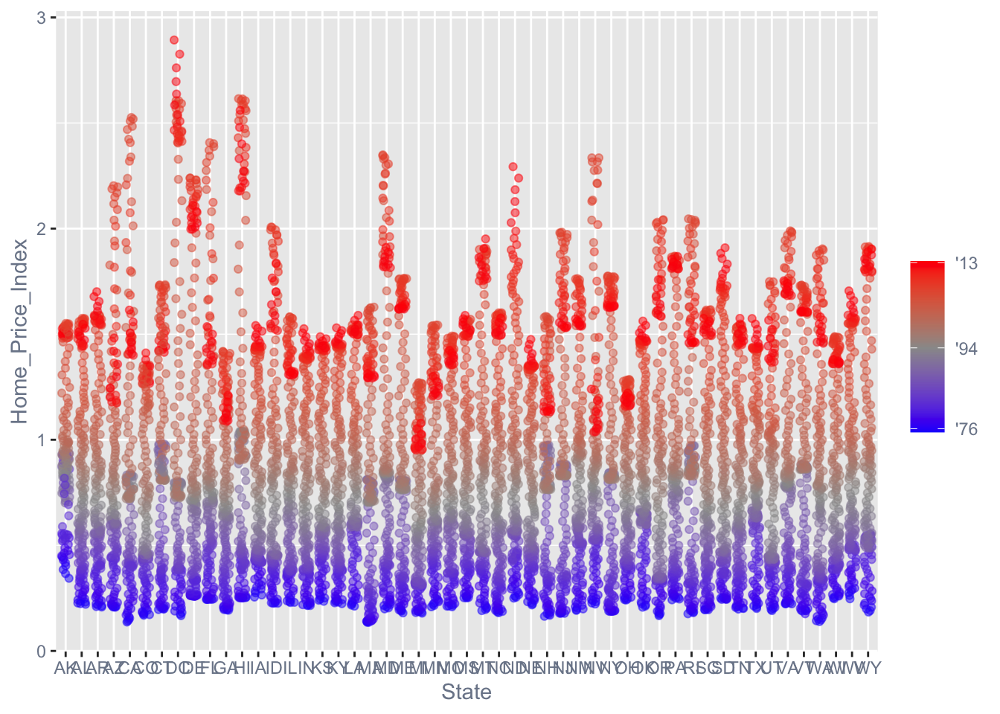
Available scales
Here’s a partial combination matrix of available scales:
scale_ |
Types | Examples |
|---|---|---|
scale_color_ |
identity |
scale_fill_continuous() |
scale_fill_ |
manual |
scale_color_discrete() |
scale_size_ |
continuous |
scale_size_manual() |
discrete |
scale_size_discrete() |
|
scale_shape_ |
discrete |
scale_shape_discrete() |
scale_linetype_ |
identity |
scale_shape_manual() |
manual |
scale_linetype_discrete() |
|
scale_x_ |
continuous |
scale_x_continuous() |
scale_y_ |
discrete |
scale_y_discrete() |
reverse |
scale_x_log() |
|
log |
scale_y_reverse() |
|
date |
scale_x_date() |
|
datetime |
scale_y_datetime() |
Note that in RStudio you can type scale_ followed by tab to get the whole list of available scales. For a complete list of available scales see https://ggplot2.tidyverse.org/reference/.
Exercise 2
- Create a scatter plot with
CPIon the x axis andHDIon the y axis. Color the points to indicateRegion.
## - Modify the x, y, and color scales so that they have more easily-understood names (e.g., spell out “Human development Index” instead of
HDI). Hint: see?scale_x_continous,?scale_y_continuous, and?scale_color_discrete.
## - Modify the color scale to use specific values of your choosing. Hint: see
?scale_color_manual. NOTE: you can specify color by name (e.g., “blue”) or by “Hex value” — see https://www.color-hex.com/.
##
TipExercise 2 solution
- Create a scatter plot with
CPIon the x axis andHDIon the y axis. Color the points to indicateRegion.
ggplot(dat, aes(x = CPI, y = HDI, color = Region)) +
geom_point()
- Modify the x, y, and color scales so that they have more easily-understood names (e.g., spell out “Human development Index” instead of
HDI). Hint: see?scale_x_continous,?scale_y_continuous, and?scale_color_discrete.
ggplot(dat, aes(x = CPI, y = HDI, color = Region)) +
geom_point() +
scale_x_continuous(name = "Corruption Perception Index") +
scale_y_continuous(name = "Human Development Index") +
scale_color_discrete(name = "Region of the world")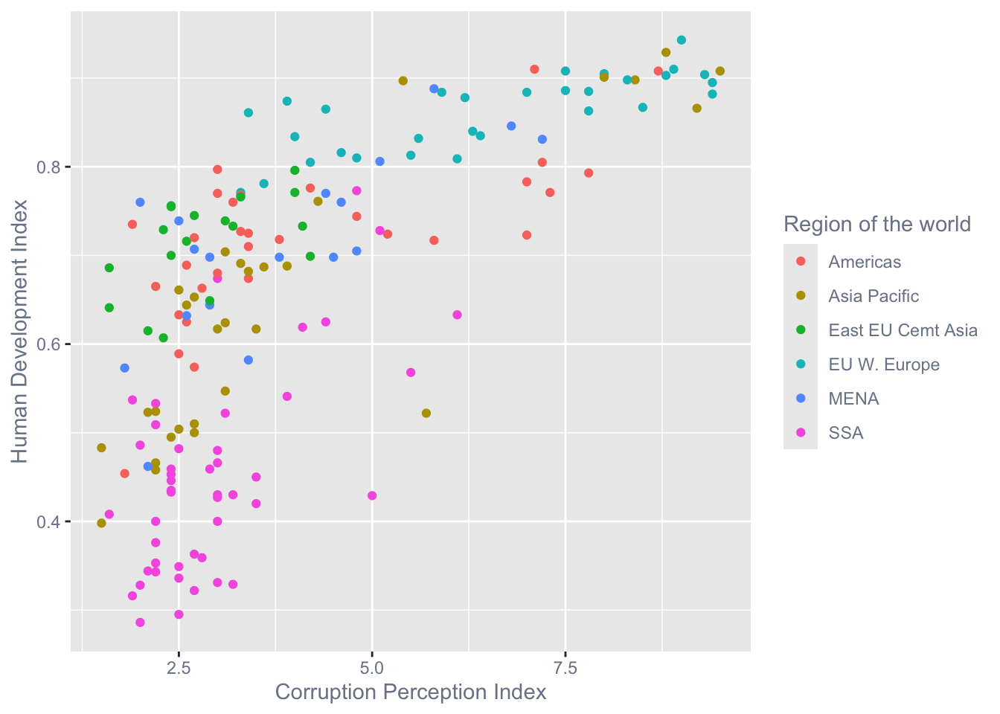
- Modify the color scale to use specific values of your choosing. Hint: see
?scale_color_manual. NOTE: you can specify color by name (e.g., “blue”) or by “Hex value” — see https://www.color-hex.com/.
ggplot(dat, aes(x = CPI, y = HDI, color = Region)) +
geom_point() +
scale_x_continuous(name = "Corruption Perception Index") +
scale_y_continuous(name = "Human Development Index") +
scale_color_manual(name = "Region of the world",
values = c("red", "green", "blue", "orange", "grey", "brown"))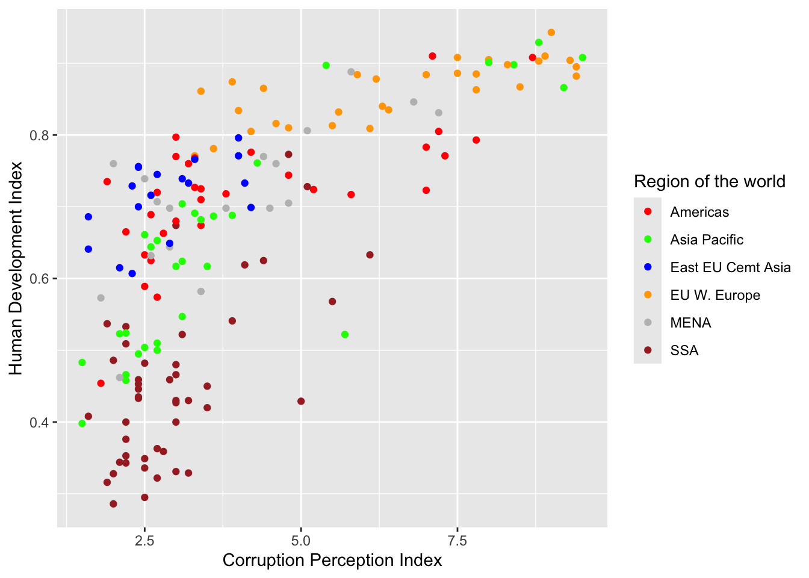
Faceting
What is faceting?
- Faceting is
ggplot2parlance for creating individual graphs for subsets of data ggplot2offers two functions for creating facets:facet_wrap(): define subsets as the levels of a single grouping variablefacet_grid(): define subsets as the crossing of two grouping variables
- Facets facilitate comparison among plots, not just of geoms within a plot
What is the trend in housing prices in each state?
Start by using a technique we already know; map State to color:
# map `State` to color
p4 <- ggplot(housing, aes(x = Date, y = Home_Value))
p4 + geom_line(aes(color = State)) 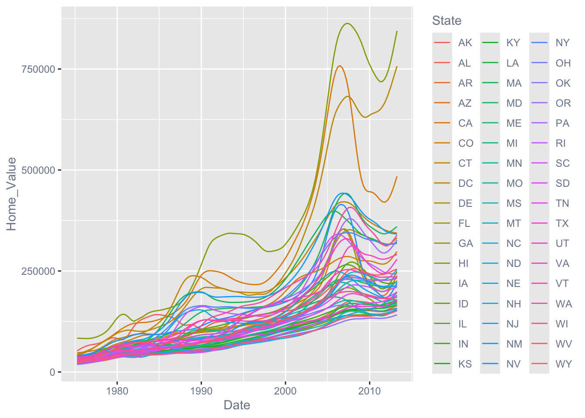
There are two problems here; there are too many states to distinguish each one by color, and the lines obscure one another.
Faceting to the rescue
We can remedy the deficiencies of the previous plot by faceting by State rather than mapping State to color.
# facet by `State`
p4 <- p4 + geom_line() +
facet_wrap(~ State, ncol = 10)
p4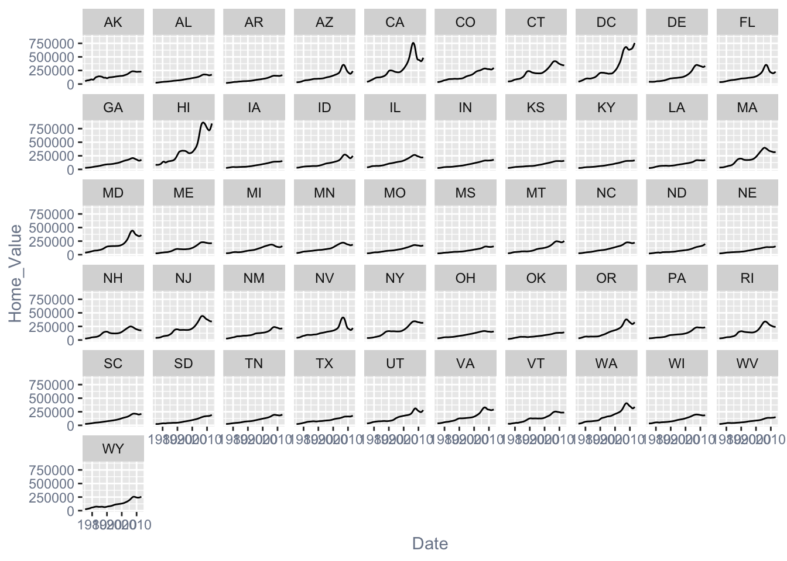
Themes
What are themes?
The ggplot2 theme system handles non-data plot elements such as:
- Axis label properties (e.g., font, size, color, etc.)
- Plot background
- Facet label background
- Legend appearance
Built-in themes include:
theme_gray()(default)theme_bw()theme_classic()
Here are a couple of examples:
# theme linedraw
p4 + theme_linedraw()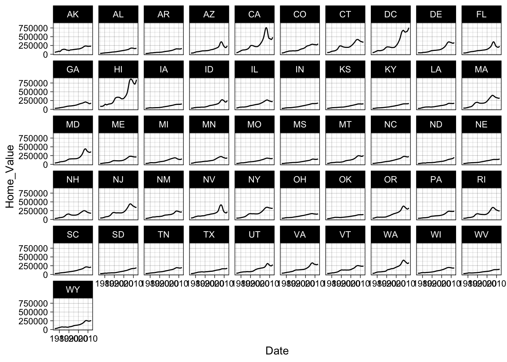
# theme light
p4 + theme_light()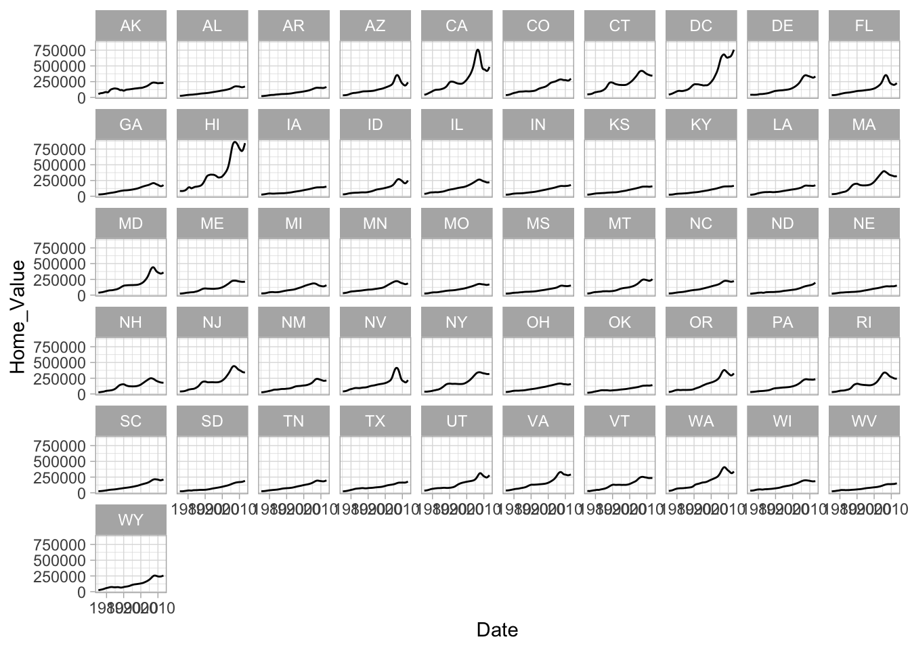
You can see a list of available built-in themes here: https://ggplot2.tidyverse.org/reference/.
Overriding theme defaults
Specific theme elements can be overridden using theme(). For example:
# theme(thing_to_modify = modifying_function(arg1, arg2))
p4 + theme_minimal() +
theme(text = element_text(color = "red")) 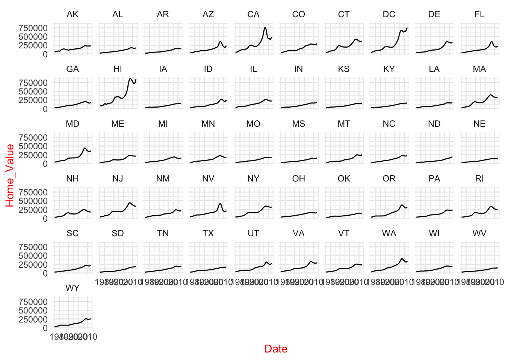
All theme options are documented in ?theme. We can also see the existing default values using:
theme_get()Creating & saving new themes
You can create new themes, as in the following example:
theme_new <- theme_bw() +
theme(plot.background = element_rect(size = 1, color = "blue", fill = "black"),
text = element_text(size = 12, color = "ivory"),
axis.text.y = element_text(colour = "purple"),
axis.text.x = element_text(colour = "red"),
panel.background = element_rect(fill = "pink"),
strip.background = element_rect(fill = muted("orange")))
p4 + theme_new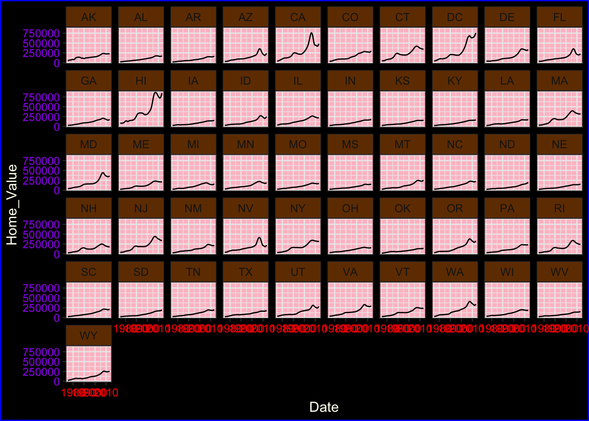
Saving plots
We can save a plot to either a vector (e.g., pdf, eps, ps, svg) or raster (e.g., jpg, png, tiff, bmp, wmf) graphics file using the ggsave() function:
# save plot output to a file
ggsave(filename = "myplot.pdf", plot = p5, device = "pdf",
height = 6, width = 6, units = "in")The #1 FAQ
Map aesthetic to different columns
The most frequently asked question goes something like this: “I have two variables in my data.frame, and I’d like to plot them as separate points, with different color depending on which variable it is. How do I do that?”
Wrong way
Assigning, rather than mapping, the color aesthetic:
- Produces verbose code when using many colors
- Results in no legend being produced
- Means you cannot change color scales
To see this, let’s first calculate summary home and land value data:
# get summary home and land value data
housing_byyear <-
housing %>%
group_by(Date) %>%
summarize(Home_Value_Mean = mean(Home_Value),
Land_Value_Mean = mean(Land_Value)) %>%
ungroup()Now let’s assign the color aesthetic to the line geom for each variable:
# assigning the color aesthetic to constants
ggplot(housing_byyear, aes(x=Date)) +
geom_line(aes(y=Home_Value_Mean), color="red") +
geom_line(aes(y=Land_Value_Mean), color="blue")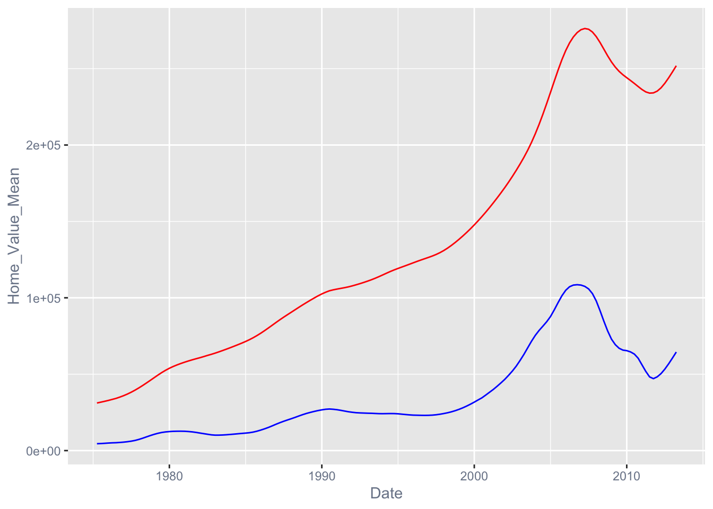
Right way
To avoid these pitfalls, we need to map our data to the color aesthetic. We can do this by reshaping our data from wide format to long format. Here is the logic behind this process:
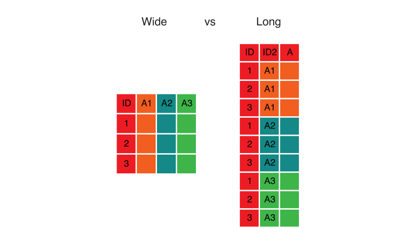
Here’s the code that implements this transformation using pivot_longer():
# reshape data from wide to long
home_land_byyear <-
housing_byyear %>%
pivot_longer(cols = c(Home_Value_Mean, Land_Value_Mean),
names_to = "type",
values_to = "value")Now we can map all our variables to the color aesthetic simultaneously, and ggplot() will automatically create a legend for us:
# map data to the color aesthetic
ggplot(home_land_byyear, aes(x = Date, y = value, color = type)) +
geom_line()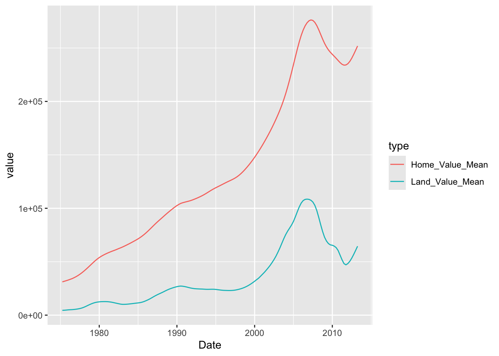
Exercise 3
For this exercise, we’re going to use the built-in midwest dataset:
data("midwest", package = "ggplot2")
head(midwest)# A tibble: 6 × 28
PID county state area poptotal popdensity popwhite popblack popamerindian
<int> <chr> <chr> <dbl> <int> <dbl> <int> <int> <int>
1 561 ADAMS IL 0.052 66090 1271. 63917 1702 98
2 562 ALEXAND… IL 0.014 10626 759 7054 3496 19
3 563 BOND IL 0.022 14991 681. 14477 429 35
4 564 BOONE IL 0.017 30806 1812. 29344 127 46
5 565 BROWN IL 0.018 5836 324. 5264 547 14
6 566 BUREAU IL 0.05 35688 714. 35157 50 65
# ℹ 19 more variables: popasian <int>, popother <int>, percwhite <dbl>,
# percblack <dbl>, percamerindan <dbl>, percasian <dbl>, percother <dbl>,
# popadults <int>, perchsd <dbl>, percollege <dbl>, percprof <dbl>,
# poppovertyknown <int>, percpovertyknown <dbl>, percbelowpoverty <dbl>,
# percchildbelowpovert <dbl>, percadultpoverty <dbl>,
# percelderlypoverty <dbl>, inmetro <int>, category <chr>- Create a scatter plot with
areaon the x axis and the log ofpoptotalon the y axis.
## - Within the
geom_point()call, map color tostate, map size to the log ofpopdensity, and fix transparency (alpha) to 0.3.
## - Add a smoother and turn off plotting the confidence interval. Hint: see the
seargument togeom_smooth().
## - Facet the plot by
state. Set thescalesargument tofacet_wrap()to allow separate ranges for the x-axis.
## - Change the default color scale to use the discrete
RColorBrewerpalette calledSet1. Hint: see?scale_color_brewer.
## - BONUS: Change the default theme to
theme_bw()and modify it so that the axis title is colored blue in bold font face and the facet label background is filled in yellow. Hint: see?themeand especiallyaxis.titleandstrip.background.
##
TipExercise 3 solution
For this exercise, we’re going to use the built-in midwest dataset:
data("midwest", package = "ggplot2")
head(midwest)# A tibble: 6 × 28
PID county state area poptotal popdensity popwhite popblack popamerindian
<int> <chr> <chr> <dbl> <int> <dbl> <int> <int> <int>
1 561 ADAMS IL 0.052 66090 1271. 63917 1702 98
2 562 ALEXAND… IL 0.014 10626 759 7054 3496 19
3 563 BOND IL 0.022 14991 681. 14477 429 35
4 564 BOONE IL 0.017 30806 1812. 29344 127 46
5 565 BROWN IL 0.018 5836 324. 5264 547 14
6 566 BUREAU IL 0.05 35688 714. 35157 50 65
# ℹ 19 more variables: popasian <int>, popother <int>, percwhite <dbl>,
# percblack <dbl>, percamerindan <dbl>, percasian <dbl>, percother <dbl>,
# popadults <int>, perchsd <dbl>, percollege <dbl>, percprof <dbl>,
# poppovertyknown <int>, percpovertyknown <dbl>, percbelowpoverty <dbl>,
# percchildbelowpovert <dbl>, percadultpoverty <dbl>,
# percelderlypoverty <dbl>, inmetro <int>, category <chr>- Create a scatter plot with
areaon the x axis and the log ofpoptotalon the y axis.
p5 <- ggplot(midwest, aes(x = area, y = log(poptotal)))
p5 + geom_point() 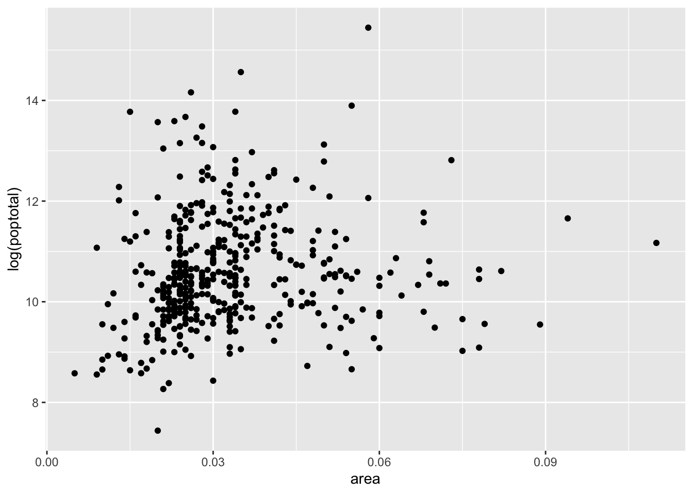
- Within the
geom_point()call, map color tostate, map size to the log ofpopdensity, and fix transparency (alpha) to 0.3.
p5 <- p5 + geom_point(aes(color = state, size = log(popdensity)), alpha = 0.3)
p5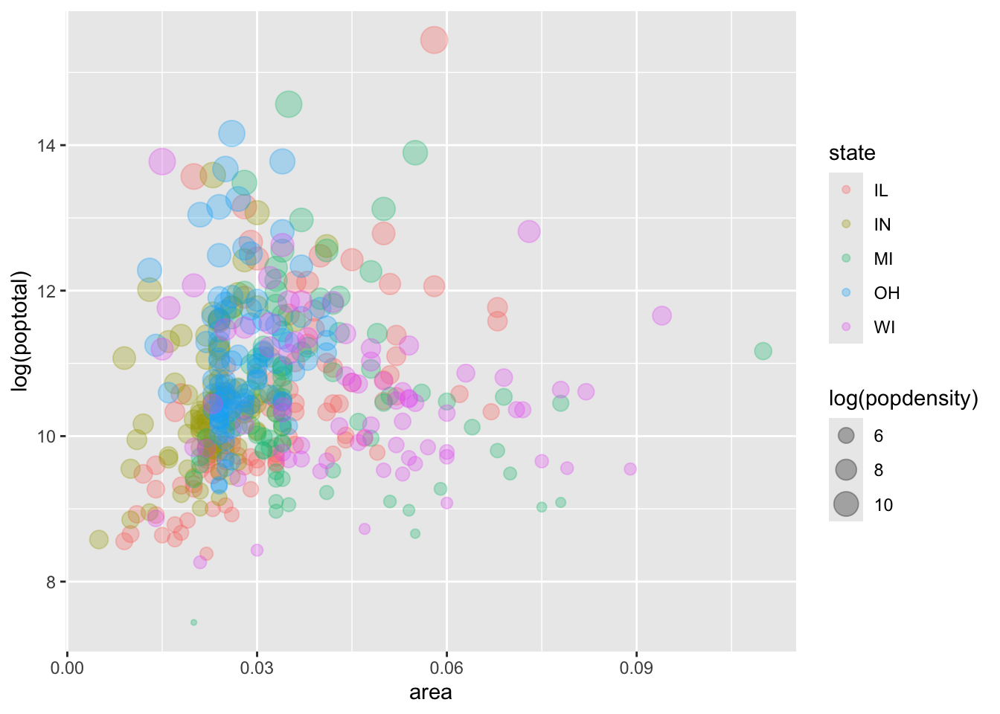
- Add a smoother and turn off plotting the confidence interval. Hint: see the
seargument togeom_smooth().
p5 <- p5 + geom_smooth(method = "loess", se = FALSE)
p5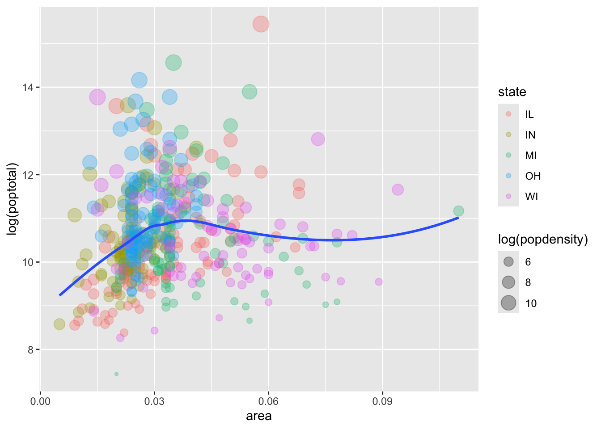
- Facet the plot by
state. Set thescalesargument tofacet_wrap()to allow separate ranges for the x-axis.
p5 <- p5 + facet_wrap(~ state, scales = "free_x")
p5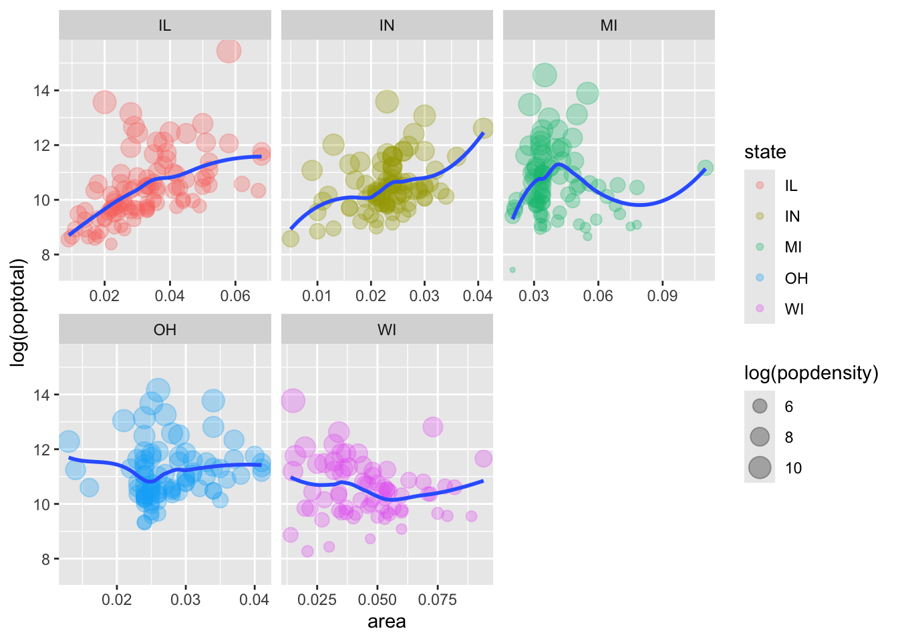
- Change the default color scale to use the discrete
RColorBrewerpalette calledSet1. Hint: see?scale_color_brewer.
p5 <- p5 + scale_color_brewer(palette = "Set1")
p5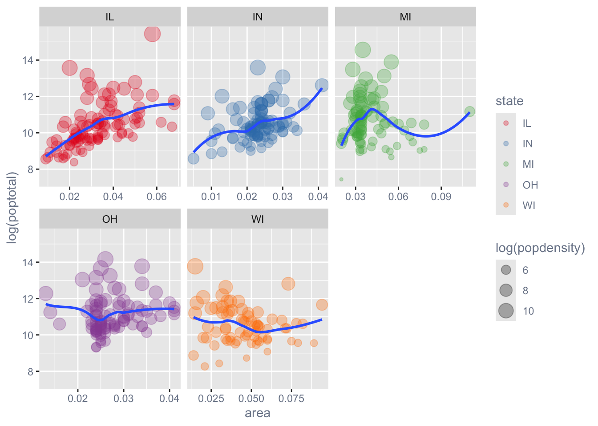
- BONUS: Change the default theme to
theme_bw()and modify it so that the axis title is colored blue in bold font face and the facet label background is filled in yellow. Hint: see?themeand especiallyaxis.titleandstrip.background.
p5 <- p5 + theme_bw() +
theme(axis.title = element_text(color = "blue", face = "bold"),
strip.background = element_rect(fill = "yellow"))
p5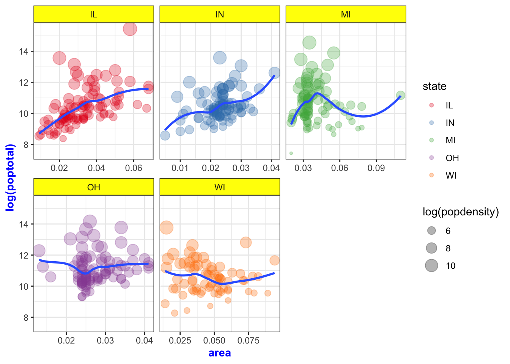
Here’s the complete code for the Exercise 3 plot:
ggplot(midwest, aes(x = area, y = log(poptotal))) +
geom_point(aes(color = state, size = log(popdensity)), alpha = 0.3) +
geom_smooth(method = "loess", se = FALSE) +
facet_wrap(~ state, scales = "free_x") +
scale_color_brewer(palette = "Set1") +
theme_bw() +
theme(axis.title = element_text(color = "blue", face = "bold"),
strip.background = element_rect(fill = "yellow")) 
Wrap-up
Feedback
These workshops are a work in progress, please provide any feedback to: help@iq.harvard.edu
Resources
- IQSS
- Training materials: https://iqss.github.io/dss-training/
- Data Science Services: https://www.iq.harvard.edu/data-science-services
- Research Computing Environment: https://iqss.github.io/dss-rce/
- ggplot2
- Reference: https://ggplot2.tidyverse.org/reference/
- Cheatsheets: https://posit.co/resources/cheatsheets/
- Examples: http://r-statistics.co/Top50-Ggplot2-Visualizations-MasterList-R-Code.html
- Tutorial: https://uc-r.github.io/ggplot_intro
- Mailing list: http://groups.google.com/group/ggplot2
- Wiki: https://github.com/hadley/ggplot2/wiki
- Website: http://had.co.nz/ggplot2/
- StackOverflow: http://stackoverflow.com/questions/tagged/ggplot